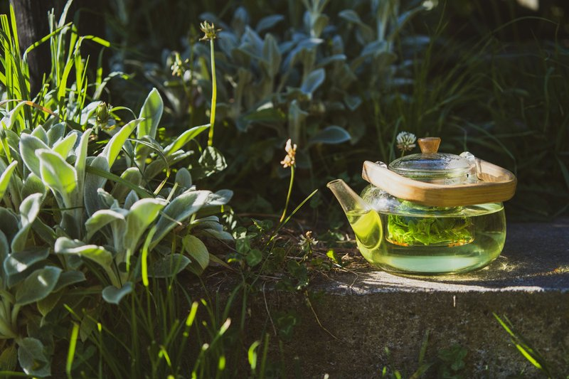
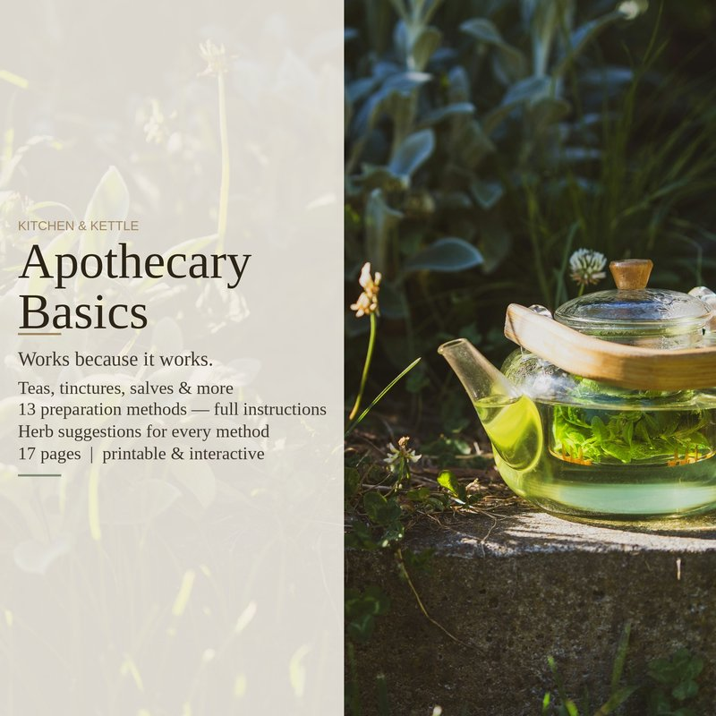

Making an herbal tea sounds simple — put herbs in hot water and wait. And for leaves and flowers, that's exactly right. But if you've ever made a cup of ginger tea that tasted like vaguely spicy water, or a cinnamon brew that barely registered, you've run into the difference between an infusion and a decoction. It's the most basic fact in herbal preparation, and most people don't know it exists.

Infusion: for the delicate stuff
An infusion is what most people mean when they say "tea." You pour hot water over herbs, cover it, and let it steep. The hot water pulls out volatile oils, flavonoids, and other water-soluble compounds from the plant material.
This works for leaves, flowers, and other delicate aerial parts — anything you can crumble easily between your fingers. Chamomile, peppermint, lemon balm, calendula, linden, red clover, nettle. The compounds you're after are near the surface, and hot water alone is enough to get them out. Ten to twenty minutes, covered (so the volatile oils don't escape with the steam), and it's done.
Decoction: for the tough stuff
A decoction is what you reach for when the herb is too tough to give up its compounds to a simple steep. Instead of pouring water over, you simmer the herbs directly in the water for twenty to forty-five minutes.
This is for roots, barks, berries, seeds, and any plant part that's dense or woody — ginger, dandelion root, cinnamon bark, elderberries, astragalus, licorice root. If you can't crumble it easily, decoct it. The sustained heat and longer time break down tough cell walls and pull out minerals, polysaccharides, and bitter compounds that a quick steep can't reach.
The method: one tablespoon of dried herb per cup of cold water. Bring to a boil, reduce to a gentle simmer, cover, and let it go. The starting-from-cold step matters — it gives the plant material time to soften as the water heats, yielding a fuller extraction than dropping it into already-boiling water.
The test: chamomile vs. ginger
Make chamomile both ways and you'll ruin it. A twenty-minute decoction of chamomile flowers gives you a bitter, flat-tasting cup with none of the gentle floral calm. The volatile compounds that make chamomile work are delicate — they release quickly in hot water and break down under sustained heat.
Do the reverse with ginger. A ten-minute steep of sliced ginger root in hot water gives you a pale, timid cup that tastes like the idea of ginger. The same ginger simmered for thirty minutes gives you a deep, warming, spicy brew that makes your whole body feel it. The gingerols and other active compounds are locked inside tough fibers — hot water alone can't get at them.
Once you know this difference, you'll taste it everywhere. That anemic cinnamon tea from a bag? A decoction would have given you the real thing. That bitter, disappointing rosemary tea someone served you? It was simmered when it should have been steeped.
What's in the full guide
Tea and decoction are just the start. Once you have these two down, there's a whole cabinet of preparations waiting — tinctures for concentrated, long-lasting extracts; oxymels that are sweet, sour, and medicinal all at once; infused oils that become the base for salves and balms; poultices and compresses for immediate use; steams and infused baths for everything else. Thirteen methods in total, each with its own logic about when to use it and why.
The full Apothecary Basics guide covers all thirteen preparation methods with complete instructions, a quick-reference table so you know which method to reach for, a supplies checklist with clickable checkboxes, troubleshooting for when things go wrong, and a notes page for tracking everything you've made. Seventeen pages, printable, no background in herbalism required.
Apothecary Basics on Etsy →